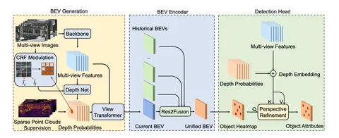

Развитие трансформерных query-based-декодеров существенно изменило подход к 3D-детекции по изображениям с камер. Классические dense BEV-based-детекторы во многом уступают современным query-based-подходам. Сегодня разберём статью о том, как использовать сильные стороны BEV-представлений для более точного и всестороннего описания 3D-сцен.
BEVNeXt — фреймворк из трёх частей: генерации, энкодера и детекционной головы. Рассмотреть архитектуру в подробностях можно на схеме, а ниже остановимся на трёх ключевых особенностях фреймворка.
CRF-modulated Depth Estimation
Интеграция CRF (Conditional Random Field) в сеть оценки глубины позволяет получать более гладкие и согласованные предсказания, учитывая сходство соседних пикселей и повышая точность позиционирования объектов.
Res2Fusion
Вместо явного выравнивания BEV-карт прошлых кадров по ego-motion модель использует для временного слияния признаков multi-scale-свёртки (в духе Res2Net). Это расширяет рецептивное поле и позволяет учитывать временные изменения без явного пространственного выравнивания исторических BEV-карт.
Object Decoder with Perspective Refinement
Проблему искажений при проекции признаков из 2D в BEV решает двухстадийный механизм детекции:
1. На BEV предсказывается heatmap центров объектов — по аналогии с CenterPoint.
2. Центр каждого найденного объекта проецируют на камеры с разными высотами (как spatial cross-attention в BEVFormer) и достают оттуда признаки через deformable attention. Такой подход помогает уточнить ориентацию и границы объектов.
Все эти улучшения решают проблемы классических BEV-моделей: неточность глубины, слабый учёт времени, искажения при проекции. В результате BEVNeXt достигает 64,2% NDS на nuScenes test, демонстрируя качество, сопоставимое с query-based-подходами (StreamPETR и SparseBEV — 63,6%, Sparse4Dv2 — 63,8% NDS).
Код BEVNeXt доступен на GitHub проекта.
Разбор подготовил
404 driver not found
